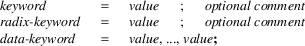

srec_coe - Xilinx Coefficient File Format
The Xilinx Coefficient File Format has a general syntax of the form:

There are numerous keywords, only the “memory_initialization_radix” and “memory_initialization_vector” keywords are used. The semicolons are mandatory.
Size
Multiplier
Binary data stored in this format expand approximately 4
times (5 time on Windows).
See Also
http://www.xilinx.com/support/documentation/sw_manuals/xilinx11/cgn_r_coe_file_syntax.htm
srec_coe.5
version 1.65
Copyright (C) 1998, 1999, 2000, 2001, 2002, 2003, 2004,
2005, 2006, 2007, 2008, 2009, 2010, 2011, 2012, 2013, 2014,
2018, 2019, 2022 Peter Miller
The srec_coe.5 program comes with ABSOLUTELY NO WARRANTY; for details use the ’srec_coe.5 -VERSion License’ command. This is free software and you are welcome to redistribute it under certain conditions; for details use the ’srec_coe.5 -VERSion License’ command.